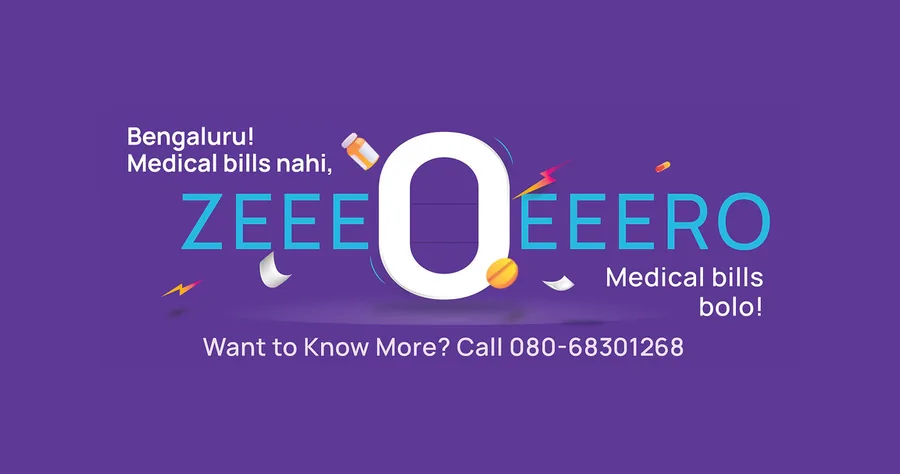

93.5 Red FM Bengaluru · 2019–202093.5
Red FM
Two years running digital for 93.5 Red FM Bengaluru: four original shows, branded films for Big Bazaar, Kurl-On and Nippon Paint, and the COVID films the city watched.
Bengaluru is the show,
not the soundtrack.Digital IPs · Digital IPs · Film · Social
I joined 93.5 Red FM Bengaluru as digital executive and took over the station's digital and social pages. The work was four original properties, Bengaluru On My Plate, The Red Travelogue, Being Bangalo'Real and Red Explains, plus four static posts a day and at least two videos a week. I scripted, planned, directed the shoots and ran the pages and analytics.
When the lockdown came, the brief moved to the city itself. I scripted and planned hyper-local films: a drone comparison of East Bengaluru before and during lockdown, a visit to the Bannerghatta animal keepers who had stayed 60 days away from home, and two films with Bengaluru City Police, a city survey and a skit at Trinity Junction asking people to stay home.
Bengaluru is the show,
not the soundtrack.
A radio station's social pages can easily become a noticeboard for contests. These properties gave people something to watch: a plate of food, a weekend drive, a person worth meeting, a locked-down city seen from above. The format did the branding. My job was to keep each episode specific to Bengaluru and keep the posting rhythm steady enough that the pages felt alive.
- Bengaluru On My Plate: a food review show covering restaurants, street food and cafés.
- The Red Travelogue with RJ Angira: weekend destinations across Karnataka.
- Being Bangalo'Real: people stories from the city.
- COVID films: drone lockdown comparison, Bannerghatta, and two with Bengaluru City Police.
- Branded films for Big Bazaar, Kurl-On, Inorbit, Forum and Nippon Paint.
Work produced at 93.5 Red FM Bengaluru. Visuals from this period were not available in the source files.
Clinikk, Zero Medical Bills
Clinikk · 2021–2023